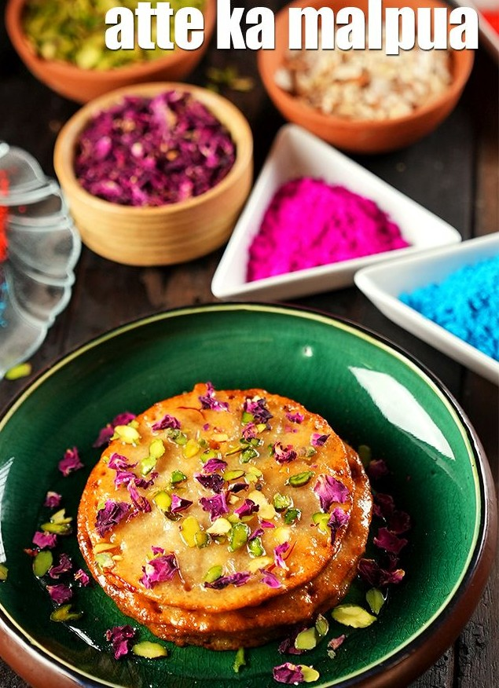

Atte Ka Malpua Recipe

Ingredients
- 1 cup whole wheat flour (atta)
- 2-3 tablespoons semolina
- 1/4 cup sugar
- A pinch of cardamom powder
- 1/2 cup milk (or as needed)
- 1/4 cup mawa (optional, for richness)
- 1/2 teaspoon fennel powder
- 2 tablespoons fresh cream
- Ghee (for frying)
- Pistachio slivers and dried rose petals (for garnish)
>For Sugar Syrup:
- 1/2 cup sugar
- 1/4 cup water
- A pinch of cardamom powder
- A few saffron strands
Steps
Steps for Sugar Syrup:
- Combine the sugar, water, cardamom powder, and saffron strands in a deep non-stick pan.
- Cook on a medium flame for 5 minutes, stirring continuously.
- Keep aside to cool slightly.
Steps for Making Malpua:
- In a deep bowl, add whole wheat flour, semolina, mawa, cardamom powder, fennel powder, fresh cream, and milk.
- Mix well to form a smooth, lump-free batter.
- Heat ghee in a broad non-stick pan.
- Pour a ladleful of the mixture into the hot ghee, one at a time.
- Deep-fry on a medium flame until golden brown on both sides.
- Drain well and dip each malpua in the warm sugar syrup for 2 to 3 minutes.
- Repeat to make 12 more malpuas.
- Garnish with pistachio slivers and dried rose petals.
- Serve the malpua immediately.